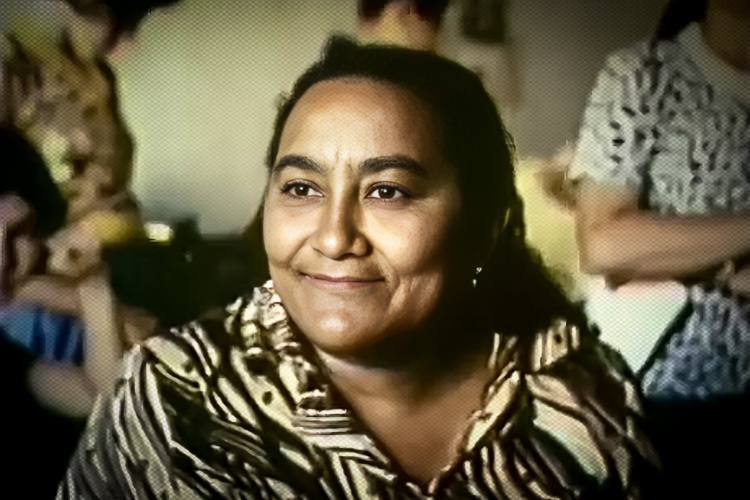
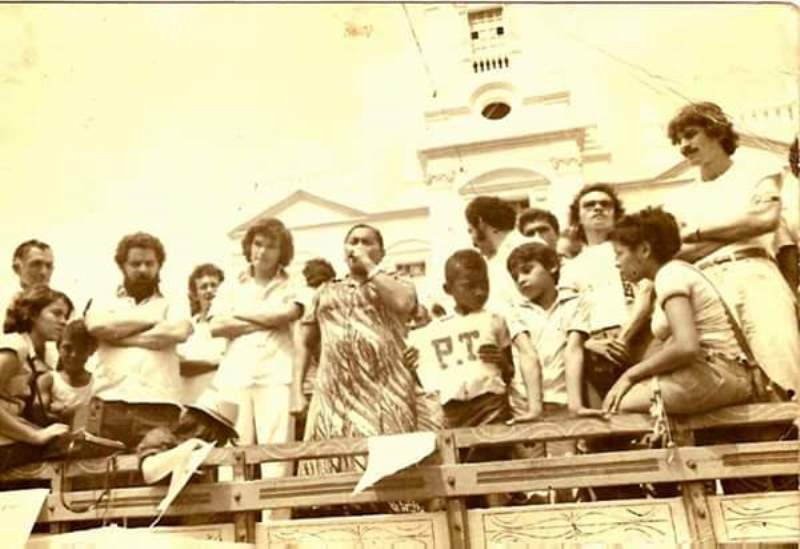

Retrato Histórico
Registro a cores preservado pela memória feminista e dos movimentos camponeses.
Líder sindical camponesa, primeira mulher a presidir o Sindicato dos Trabalhadores Rurais de Alagoa Grande e figura homenageada no Livro dos Heróis e Heroínas da Pátria.
"Da luta eu não fujo. É melhor morrer na luta do que morrer de fome."Pronunciamento público em 1º de maio de 1983, Alagoa Grande (PB)

Nascida em 5 de agosto de 1933 em Alagoa Grande (PB), Margarida era filha de Manoel Lourenço Alves (origem indígena) e Alexandrina Inácia da Conceição (mulher negra). Caçula de nove irmãos, começou na lida da terra aos oito anos sob o regime servil de cambão.
Aos 22 anos, sua família foi expulsa do Sítio Jacu pelo latifundiário João Senhor. Margarida reagiu ingressando com sua primeira ação na Justiça do Trabalho, iniciando sua trajetória de enfrentamento ao coronelismo no Brejo Paraibano.

Eleita presidente do Sindicato dos Trabalhadores Rurais de Alagoa Grande em 1973, sob a ditadura militar (AI-5), Margarida foi a primeira mulher a liderar um sindicato na Paraíba, exercendo o mandato por doze anos.

Enfrentou diretamente o complexo da Usina Tanques, de Aguinaldo Veloso Borges e Zito Buarque, com mais de 70 ações trabalhistas ativas em 1983. Em 1980, cofundou o CENTRU com Manuel da Conceição, levando a alfabetização popular de Paulo Freire para o campo.
Conheça o impacto, as ações judiciais e a realidade documental de cada conquista dos trabalhadores rurais:
O registro formal da relação de trabalho e o encerramento do regime servil de cambão.
Ler explicação detalhada →O combate às rotinas de 12 a 14 horas de sol a sol e o tempo para a educação popular.
Ler explicação detalhada →A extensão da gratificação natalina e a superação das dívidas com os barracões das usinas.
Ler explicação detalhada →A garantia do descanso anual remunerado de 30 dias contra o descarte salarial na entressafra.
Ler explicação detalhada →O descanso de 24 horas consecutivas contra o regime de moagem contínua de domingo a domingo.
Ler explicação detalhada →A sindicalização autônoma da trabalhadora rural e o acesso a licença-maternidade e aposentadoria.
Ler explicação detalhada →A retirada de menores das frentes de corte e a garantia de vagas escolares com o CENTRU.
Ler explicação detalhada →A firmeza do sindicato contrariou o "Grupo da Várzea", consórcio criminoso que reunia mais de 60 latifundiários, políticos e policiais da região. Em 12 de agosto de 1983, aos 50 anos, Margarida foi assassinada na porta de sua casa com um tiro de escopeta calibre 12 no rosto, disparado pelo pistoleiro e soldado PM Betâneo Carneiro dos Santos, na presença de seu filho de 8 anos.
O processo arrastou-se por quase duas décadas e os mandantes da Usina Tanques nunca cumpriram pena no Brasil. Em 2020, a Comissão Interamericana de Direitos Humanos (CIDH/OEA) aprovou o Relatório nº 31/20, condenando o Estado brasileiro por negligência investigativa e cumplicidade com a violência latifundiária.


Criada no ano 2000 pela CONTAG e movimentos camponeses, a Marcha das Margaridas é a maior mobilização de mulheres trabalhadoras da América Latina, reunindo a cada quatro anos mais de 100 mil camponesas em Brasília. Em 2023, Margarida foi inscrita no Livro dos Heróis e Heroínas da Pátria. Os 13 eixos que orientam o movimento são:
Registros fotográficos autênticos preservados por arquivos públicos e memoriais populares:
Registro a cores preservado pela memória feminista e dos movimentos camponeses.
Margarida discursando sobre caminhão perante centenas de lavradores nos anos 1980.
Residência oficial transformada em centro de memória na Rua Olinda.
Mais de 100 mil trabalhadoras rurais mobilizadas na Esplanada dos Ministérios em Brasília.
Retrato documentado no relatório oficial sobre os mortos e perseguidos pela ditadura militar.
Acompanhe os fatos marcantes. A barra lateral preenche dinamicamente conforme você rola a página:
Nasce em 5 de agosto, em Alagoa Grande, filha caçula de camponeses lavradores.
Expropriada pelo fazendeiro João Senhor. Margarida ingressa com sua primeira ação na Justiça do Trabalho.
Primeira mulher eleita presidente do Sindicato dos Trabalhadores Rurais de Alagoa Grande sob o AI-5.
Co-funda com Manuel da Conceição o Centro de Educação e Cultura do Trabalhador Rural com metodologia de Paulo Freire.
Em 1º de maio profere a frase histórica. Em 12 de agosto é assassinada na porta de casa com um tiro de escopeta 12 no rosto.
Reconhecimento póstumo outorgado internacionalmente pela dedicação inegociável aos Direitos Humanos.
Oficializada em João Pessoa por Dom José Maria Pires para formação de juristas populares.
Primeira edição da marcha em Brasília e formalização da petição internacional na Comissão Interamericana de Direitos Humanos.
Instituição oficial do dia 12 de agosto como o Dia Nacional dos Direitos Humanos no calendário da República.
O Estado brasileiro reconhece a responsabilidade pelas perseguições e indeniza o filho José de Arimatéia.
A CIDH/OEA aprova o Relatório 31/20, condenando o Brasil por negligência investigativa e impunidade do latifúndio.
Inscrição solene no Panteão da Pátria e da Liberdade, em Brasília, durante a 7ª Marcha das Margaridas.